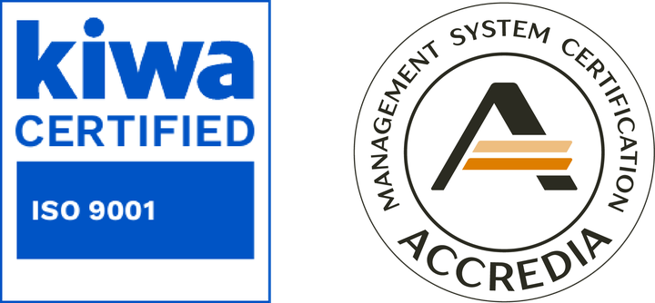

QUALITÀCERTIFICATA
La qualità è il nostro metodo: standard internazionali, legalità, etica e valorizzazione del Made in Italy.
Home › Qualità
CI IMPEGNIAMO OGNI GIORNO PER GARANTIRE PRODOTTI SICURI, SOSTENIBILI E UN AMBIENTE DI LAVORO ETICO.
CERTIFICAZIONE ISO 9001
La norma ISO 9001 definisce i requisiti per un sistema di gestione della qualità. Per noi significa:
- Controllo rigoroso dei processi produttivi
- Tracciabilità completa delle materie prime
- Miglioramento continuo delle prestazioni
- Soddisfazione del cliente

CERTIFICAZIONE ISO 14001
La norma ISO 14001 definisce i requisiti per un sistema di gestione ambientale. Per noi significa:
- Controllo di rifiuti, emissioni e consumi di energia e materiali
- Rispetto delle norme ambientali che si applicano alla nostra attività
- Obiettivi ambientali definiti e misurati nel tempo
- Miglioramento continuo delle prestazioni ambientali
Scarti, energia e materiali: come lavoriamo è spiegato nella pagina Green Vision.
PARITÀ DI GENERE
Crediamo nel valore delle persone. Abbiamo ottenuto la certificazione per la Parità di Genere (UNI/PdR 125:2022) perché un ambiente di lavoro inclusivo ed equo è alla base del nostro lavoro.
Promuoviamo le pari opportunità nelle assunzioni, nella retribuzione e nello sviluppo di carriera, valorizzando il talento senza barriere.
ITALIA IMBOTTITI
Siamo membri del consorzio Italia Imbottiti, il marchio che garantisce l'origine e la qualità dei prodotti per l'arredamento Made in Italy.
Questa adesione comporta il rispetto di:
- Origine italiana delle lavorazioni
- Sicurezza dei materiali e assenza di sostanze nocive
- Rispetto delle normative ambientali
- Tutela del consumatore finale
RATING DI LEGALITÀ
Il Rating di legalità è il riconoscimento che l'Autorità Garante della Concorrenza e del Mercato (AGCM) attribuisce alle imprese che rispettano precisi requisiti di legalità e trasparenza. Si esprime in stelle, da una a tre.
Per noi significa lavorare in modo corretto e verificabile con clienti, fornitori e istituzioni. Il rating conta anche nell'accesso al credito e ai finanziamenti pubblici.